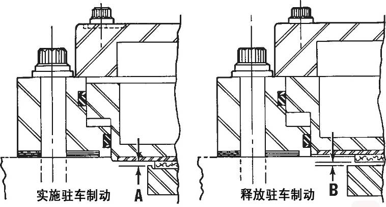
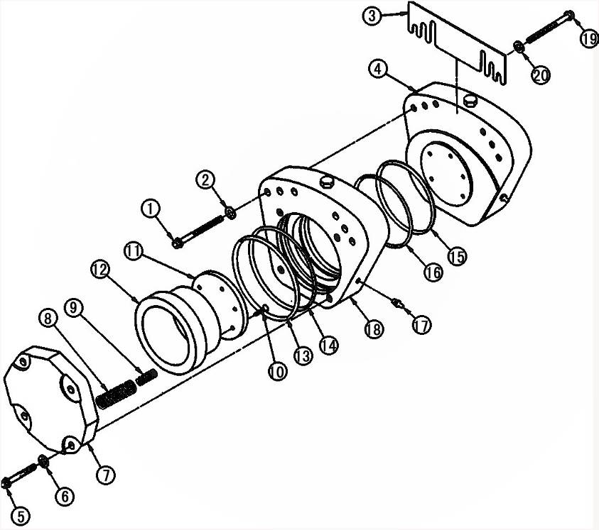
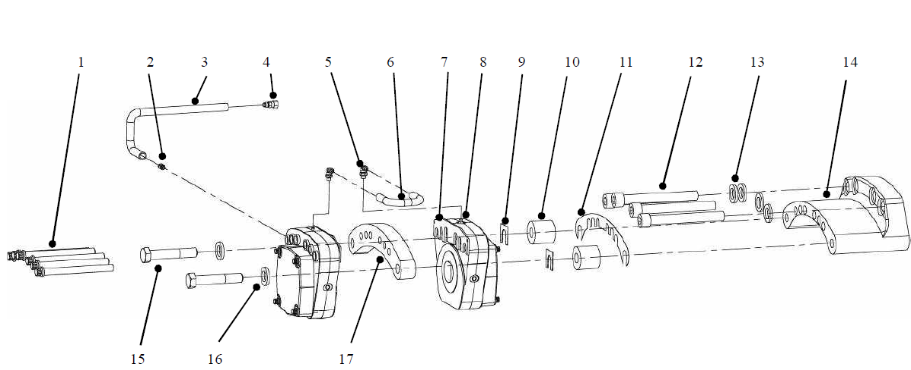
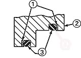

前制动总成. · FRONT BRAKE CALIPER ASM
Стояночный тормоз в сборе
ПРЕДУПРЕЖДЕНИЕ
Рекомендуется соблюдать порядок ремонта тормозной системы, приведенный в данной инструкции, следует максимально уменьшить контакт с волокнистой пылью, волокнистая пыль является потенциальной предрасположенностью к раку и легочным заболеваниям. Самое главное необходимо избегать загрязнения воздуха (например, загрязняющие вещества плавают вслед за воздухом) или непосредственного контакта с кожей или другими органам. Избегайте вдыхания загрязняющих веществ, после контакта с ними очищайте руки и другие открытые части тела после контакта. Всегда соблюдайте правила техники безопасности на рабочем месте.Общие сведения
Стояночный тормоз в сборе CARLISLE - как суппорт/тормозной диск, устанавливается на электромотор-колесе в сборе. Стояночный тормоз только может помочь удерживать ТС в неподвижном состоянии. Когда ТС находится без присмотра или в процессе парковки ТС с выключенным двигателем, на всякий случае следует удерживать его в безопасном неподвижном состоянии.
Каждый стояночный тормоз (суппорт) в сборе включает в себя пару поршней и корпус в сборе. Стояночный тормоз осуществляет функцию торможения путем гидравлического управления выпуском воздуха из пружинного энергоаккумулятора. Включение стояночного тормоза должно производиться в неподвижном состоянии ТС.
Диагностика неисправностей, ремонт и регулировка
ВАЖНО: Перед проведение любых ремонтных работ удерживайте ТС в безопасном неподвижном состоянии. Кроме включения стояночного тормоза, удерживайте ТС в неподвижном состоянии другими средствами (например, подкладывание клиньев под колеса - это часто встречаемый способ).
Периодическое техническое обслуживание включает следующие виды работ:
1. Проверить тормоз в сборе, питающий маслопровод и штуцер на наличие следов утечек или повреждений. Отремонтировать или заменить его по мере необходимости.
2. Проверьте, что минимальная толщина тормозного диска составляет 0,75 дюйма (19 мм) или нет. Если он изнашивается до толщины меньше этой, замените его.
ПРЕДУПРЕЖДЕНИЕ
Непрерывное использование тормозного диска толщиной менее 0,75 дюйма (19 мм) может привести к потере тормозной способности.3. Освободите тормоз, проверьте зазор между каждой стороной тормозного диска и фрикционной накладкой, минимальное значение должно быть не менее 0,020 дюйма (0,51 мм). Если этот размер не соответствует норме, отрегулируйте по мере надобности.
4. Проверьте башмак, фрикционную накладку в сборе и тормозной диск в соответствии с установленными требованиями.
ПРЕДУПРЕЖДЕНИЕ
Во время работы вокруг тормоза будьте особенно осторожны. При растормаживании повышается давление в стояночной тормозной системе; при торможении сбрасывается давление в стояночной тормозной системе. До полного сброса давления не допускается отсоединение любых трубопроводов под давлением.Удаление воздуха из стояночного тормоза
Выпуск воздуха из тормозной системы - это процесс удаления воздуха и загрязняющих веществ из жидкости в тормозной системе.
Если ТС оснащено полностью гидравлической тормозной системой, переместите переключатель стояночного тормоза в расторможенное положение и удерживайте его в этом положении, чтобы выключить стояночный тормоз. Если ТС оснащено тормозной системой с гидроприводом, необходимо проводить многократную циклическую очистку контрольных и исполнительных элемент, используемых в системе.
Более подробную информацию о порядке для каждой системы см. в пятой главе «Гидравлическая система» или в шестой главе «Воздушная система».
Перед приведением в действие следует удалить остаточный воздух и другие примеси из гидравлического масла, это очень важно.
Опасно
Гидравлическая тормозная система является системой высокого давления. Будьте осторожны при выполнении некоторых операций.
ПРЕДУПРЕЖДЕНИЕ
Жидкость может вызвать раздражение кожи. Избегайте попадания в глаза или длительного контакта с кожей.ВНИМАНИЕ: Увеличение давления в неотрегулированной стояночной тормозной системе может привести к повреждению уплотнительного кольца тормоза.
Проверьте степень износа фрикционной накладки и тормозного диска в сборе стояночного тормоза в соответствии со следующим порядком:
1. Припаркуйте ТС в безопасном месте. Кроме включения стояночного тормоза, удерживайте ТС в неподвижном состоянии другими средствами (например, подкладывание клиньев под колеса - это часто встречаемый способ)
2. Убедитесь в правильном удалении воздуха из системы, подробный порядок см. в пятой главе «Гидравлическая система» или в шестой главе «Воздушная система».
3. Для включения стояночного тормоза осуществляется следует переключить переключатель стояночного тормоза в положение «ВКЛ» и удерживать его в этом положении в течение несколько секунд (до отпускания переключателя).
ПРИМЕЧАНИЕ: Перед включением или выключением стояночного тормоза следует привести в действие систему торможения в загруженном состоянии или ручник.
4. Сбросьте давление, измерьте калибровым щупом зазор между внешней стороной тормозного диска и тормозной колодкой с помощью датчика (см. размер «А» на рис. 1). Тщательно измерьте, включая наружный заусенец тормозного диска. Измерьте толщину изношенной поверхности тормозного диска.
a. Если значение зазора (A) больше 0,040 дюйма (1,0 мм), толщина тормозного диска больше 0,75 дюйма (19 мм), то следует выполнить шаг 6.
ПРИМЕЧАНИЕ: Если толщина тормозного диска равна или меньше 0,75 дюймов, перед переходом к другим шагам необходимо заменить тормозной диск. Порядок замены тормозного диска см. в главе 8 «Тормозная система».
b. Если размер зазора «А» составляет менее 0,040 дюйма (1,0 мм), то необходимо заменить тормозной диск или фрикционную накладку. Снимите стояночный тормоз и измерьте оставшуюся толщину фрикционной накладки.
(1) Заменить тормозной диск в следующих случаях:
(a) Толщина тормозного диска составляет менее 0,750 дюймов (19,0 мм).
(b) На наружном диаметре тормозного диска отсутствует заусенец, а толщина оставшегося материала больше, чем у фрикционной накладки, и составляет менее 0,165 дюйма (4,2 мм).
(2) Замените фрикционную накладку и башмак в сборе, если :
(a) Отсутствие буртика по наружному краю тормозного диска.
(b) Наличие буртика по наружному краю тормозного диска, толщина наиболее изношенной части больше 0,750 дюйма (19 мм).
5. Переключить переключатель стояночного тормоза в положение «ВЫКЛ» и удерживать в этом положении в течение нескольких секунд, чтобы достичь цели выключения стояночного тормоза.
ПРИМЕЧАНИЕ: Энергоаккумулятор или ресивер находится в заполненном состоянии или двигатель находится в рабочем состоянии.
6. Освободите стояночный тормоз (давление на подаче), Измерьте щупом зазор между фрикционной накладкой и тормозным диском стояночного тормоза (см. размер «В» на рис. 1).
Рис. 1. Ремонт и регулировка стояночного тормоза - измерение зазоров
ПРИМЕЧАНИЕ: В некоторых случаях все-таки требуется регулировка тормозной системы, даже если тормозной диск или фрикционная пластина были заменены.
a. Если размер зазора «В» составляет более 0,020 дюйма (0,5 мм) и менее 0,065 дюймов (1,8 мм), продолжайте ремонт.
b. Если размер зазора «В» составляет менее 0,020 дюйма (0,5 мм) или более 0,065 дюймов (1,8 мм), то потребуется регулировка. Отрегулируйте размер «В» с использованием регулировочных прокладок до 0,020-0,050 дюймов (0,5-1,3 мм), продолжайте ремонт.
ПРЕДУПРЕЖДЕНИЕ
Невыполнение процедуры регулировки значительно изношенного тормоза может привести к выходу из строя стояночного тормоза автомобиля.
Регулировка тормоза (см. рис. 2)
Необходимо регулярно регулировать стояночный тормоз, чтобы компенсировать износ фрикционной накладки и тормозного диска, следуйте следующему порядку:
1. Припаркуйте ТС в безопасном месте, кроме включения стояночного тормоза, удерживайте ТС в неподвижном состоянии другими средствами (например, подкладывание клиньев под колеса - это часто встречаемый способ).
2. Удалите воздух и загрязняющие вещества в соответствии с порядком, указанным в пятой главе «Гидравлическая система» или в шестой главе «Воздушная система».
3. Переключить переключатель стояночного тормоза в положение «ВЫКЛ» и удерживать в этом положении в течение нескольких секунд, освободить стояночный тормоз.
Рис. 2. Стояночный тормоз
ПРИМЕЧАНИЕ: Перед включением или выключением стояночного тормоза следует привести в действие систему торможения в загруженном состоянии или ручник.
4. Измерьте щупом расстояние между двумя сторонами тормозного диска и фрикционной накладки в соответствии со следующим порядком:
a. Центрировать монтажный кронштейн относительно верхней части тормозного диска, допустимое отклонение составляет (не более) 0,010 дюйма (0,25 мм).
b. Отрегулируйте поршень и корпус в сборе с использованием регулировочных прокладок (3), чтобы довести зазор между фрикционной накладкой и тормозным диском до 0,020-0,050 дюймов (0,5-1,3 мм).
5. Установить болт (1), момент затяжки составляет 380-390 дюйм-фунтов (515-530 Н.м), повторно измерить зазор. Повторно отрегулировать зазор по мере необходимости.
ПРИМЕЧАНИЕ: Если существует необходимости установки поршня и корпуса в сборе без нагнетания давления (включения тормоза), то необходимо попеременно затянуть 6 болтов 3/4" (19) до достижения требуемого момента
Проводите полировку тормозной колодки в соответствии со следующим порядком:
1. Проверить тормозную систему в соответствии с требованиями, чтобы обеспечить правильность установки.
2. Попеременно нажимая и отпуская педаль тормоза на скорости около 5-10 миль в час (8-16 км/ч), очистите тормозной диск, в то же время доведите температуру до 700-750°F (370-400°C).
ПРИМЕЧАНИЕ: Измерить температура при соприкосновении тормозных колодок с тормозным диском.
3. Полностью включить систему торможения в загруженном состоянии или ручник.
4. Включить стояночный тормоз.
5. Освободить систему торможения в загруженном состоянии, ручник и педаль тормоза.
6. Пусть тормозная колодка прижимается к горячему тормозному диску до тех пор, пока тормозной диск не остынет примерно до 200°F (94°C), очистите тормозной диск и горячую тормозную колодку.
7. Проверить стояночный тормоз в соответствии с порядком регулировки тормоза.
8. Если существует необходимость определения способности удержания ТС в неподвижном состоянии, это может производиться на крутом склоне, но уклон не должен превышать 15%.
ПРЕДУПРЕЖДЕНИЕ
Следует правильно управлять рабочими тормозами. Неправильное управление рабочими тормозами может вызвать невозможность остановки ТС, также привести к несчастным случая и серьезным травмам.Снятие (см. рис. 4)
Снятие каждого стояночного тормоза производится в следующем порядке:
1. Припаркуйте ТС в безопасном месте. Кроме включения стояночного тормоза, удерживайте ТС в неподвижном состоянии другими средствами (например, подкладывание клиньев под колеса - это часто встречаемый способ).
2. Переключить переключатель стояночного тормоза в положение «ВКЛ» и удерживать в этом положении в течение нескольких секунд, затем освободить стояночный тормоз.
3. Отсоедините гидротрубопровод от стояночного тормоза. Закупорьте трубопровод металлической заглушкой и наклейте на него этикетку для облегчения повторной установки.
4. Нагнетайте давление в трубке подачи масла тормоза до 1300-2500 фунтов на квадратный дюйм (8965-17428 кПа), чтобы втянуть поршень. Поддерживайте давление в процессе снятия.
Опасно
Не допускается снятие стояночного тормоза в том случае, если невозможно убедиться в надлежащем включении стояночного тормоза и полном сборе давления жидкости.ПРИМЕЧАНИЕ: В процессе снятия и установки рекомендуется использовать внешний источник давления (например, силовой узел или подобное оборудование, еще следует заполнять тем же маслом, которое совместимо с используемым маслом в тормозной системе автомобиля), чтобы обеспечить требуемое давление в трубопроводах во время установки и снятия.
5. Снимите болты и шайбы, используемые для крепления стояночного тормоза на кронштейне.
6. Снять стояночный тормоз в сборе.
7. Снять монтажный кронштейн, регулировочную прокладку и соответствующие элементы по мере необходимости.
Разборка (см. рис. 2)
Разборка стояночного тормоза производится в следующем порядке.
ПРЕДУПРЕЖДЕНИЕ
Компоненты тормоза работают под действием пружин. Будьте особенно осторожны и проводите разборку в соответствии с установленными требованиями.1. Отворачивать болт (5) на 1 оборот за один прием, сбросить давление пружины, действующее на поршень (12).
2. После полного сброса давления пружины снять болт (5), шайбу (6) и крышку (7).
3. Ослабьте болт (10), держите башмак и тормозную колодку в сборе (11) на поршне. Снимите болт, башмак и тормозную колодку в сборе .
ПРИМЕЧАНИЕ: Поскольку на болте (10) был нанесен эпоксидный клей для фиксации на поршне (12), в связи с этим, снятие болта может потребоваться больший крутящий момент, чем обычно. Нагрейте болт (до 350°F/177°C), это облегчит ослабление.
Осмотр и ремонт (см. рис. 2)
Ремонт разобранного тормоза в сборе производится в следующем порядке:
1. Проверить наличие/отсутствие износа, повреждений или утечек. Отремонтировать или заменить по мере необходимости.
2. Проверьте башмак и тормозную колодку в сборе (11) на наличие износа и повреждений. Если башмак располагается близко к тормозному диску или прикасается к ней, то необходимо заменить.
3. Проверить поршень на наличие царапин, рисок и других незначительных повреждений поверхности. Отполировать поврежденную поверхность наждачной тканью с мелким зерном.
4. Проверить корпус поршня (4) на наличие царапин, трещин или повреждений поверхности. Отполировать незначительно поврежденную поверхность наждачной тканью с мелким зерном. В случае обнаружения царапин и трещин на корпусе поршня, следует его заменить.
5. Проверить тормозной диск на наличие износа и царапин. Если остаточная толщина при износе меньше 0,750 дюйма (19 мм), то следует его заменить. Проверить все дренажные клапаны (17) и штуцеры на наличие разрушения резьбы. Заменить все детали с поврежденной резьбой.
6. При любом ремонте тормоза в сборе следует заменить все уплотнительные узлы и опорные кольца.
Сборка (см. рис. 2 и рис. 3)
Сборка тормоза производится в следующем порядке:
Смазать уплотнительные узлы (14 и 16) и опорные кольца (13 и 15) чистым маслом (которое совместимо с используемым маслом в тормозной системе).
2. Установить уплотнительные узлы и опорные кольца в канавки корпусов поршней (4 и 18). Установить уплотнительные узлы рядом с боковыми поверхностями опорных колец, плоскость опорных колец должна плотно прилегать к корпусам (см. рис. 3).
ПРИМЕЧАНИЕ: Перед продолжением сборки убедиться в правильной посадке уплотнительных узлов и опорных колец в канавках.
3. Проводите сборку башмака и тормозной колодки в сборе (11) на поршне (12), закрепите болтом (10). Перед установкой нового башмака и тормозную колодку в сборе, очистите болт чистящим средством, чтобы удалить старый клей. Нанесите эпоксидный клей (конструкционный клей Scotch-Weld 2158B/A) на 4-5 витков резьбы.
ПРИМЕЧАНИЕ: Конструкционный клей Scotch-Weld 2158B/A - эпоксидный двухкомпонентный адгезив производства компании горнодобывающей и обрабатывающей промышленности Minnesota, при использовании следуйте инструкции производителя. В этом процессе сборки вместо такого клея можно использовать LOCTITE242.
4. Установите поршень и фрикционную накладку в сборе на корпусе поршня, будьте осторожны, избегайте повреждений уплотнительного узла и опорного кольца.
5. Установить пружины (8 и 9) резьбовой конец болта (10).
6. Установить пару пружин (большой и малой) на каждый болт.
7. Установить крышку (7) на пружину и закрепить его к корпусу поршня с помощью болта (5) и шайбы (6). Момент затяжки несмазанных деталей составляет 110-120 дюйм-фунтов (150-165 Н.м).
Установка (см. рис. 4)
Установка тормоза в сборе производится в следующем порядке:
1. Присоединить тормозной маслопровод к резьбовому отверстию 7/16-20 в корпусе поршня. Следует защитить от утечки масла с помощью уплотнительной ленты или штуцера с О-образным кольцом.
2. Нагнетайте давление в трубке подачи масла до 1300-2500 фунтов на квадратный дюйм (8965-17240 кПа), чтобы втянуть поршень. В процессе установки поддерживайте это давление.
ПРИМЕЧАНИЕ: В процессе снятия и установки рекомендуется использовать внешний источник давления (например, силовой узел или подобное оборудование, еще следует заполнять тем же маслом, которое совместимо с используемым маслом в тормозной системе автомобиля), чтобы обеспечить требуемое давление в трубопроводах во время установки и снятия.
3. Установите поршень и корпус в сборе (8) на распорное кольцо (17) с помощью 6 болтов большим диаметром 3/4′′класса прочности SAE 8 (1) и закаленные шайбы.
ПРЕДУПРЕЖДЕНИЕ
Установить тормозной диск и тормоз с помощью болтов SAE8 и плоских шайб из закаленной стали, чтобы обеспечить надежность установки.4. Установите регулировочные прокладки (11) между кронштейном (14) стояночного тормоза и колодкой стояночного тормоза (10), установите регулировочные прокладки (9) между колодкой стояночного тормоза (10) и стояночным тормозом (8), установите регулировочные прокладки (7) с обеих сторон распорного кольца (17). Убедитесь, что зазор между тормозными колодками и тормозными дисками с обеих сторон стояночного тормоза составляет 0,020-0,030 дюйма.
5. Момент затяжки несмазанных деталей составляет 380-390 дюйм-фунтов (515-530 Н.м)
6. Удалить воздух в соответствии с требованиями, указанными в разделе «Техническое обслуживание и регулировка».
7. Нагнетайте давление в системе (освободите стояночный тормоз), проверьте зазор между тормозным диском и башмаком и фрикционной накладкой в сборе. Зазор с обеих сторон тормозного диска должен быть одинаковым.
ПРЕДУПРЕЖДЕНИЕ
При работе ТС необходимо поддерживать зазор между тормозным диском и башмаком и фрикционной накладкой в сборе, чтобы предотвратить пробуксовку и износ.8. Проверить наличие/отсутствие утечек, определить правильность установки.
9. Перед повторным вводом автомобиля в действие проводить притирку в соответствии с требованиями, указанными в разделе «Техническое обслуживание и регулировка».
Спецификация
1
Болт
10
колодки стояночного тормоза
2
Штуцер
11
Регулировочная прокладка
3
Колено
12
Болт
4
Штуцер
13
Шайба
5
Штуцер
14
Кронштейн стояночного тормоза
6
Соединительный трубопровод
15
Болт
7
Регулировочная прокладка
16
Шайба
8
Стояночный тормоз
17
Проставочное кольцо
9
Регулировочная прокладка
Рис. 4. Снятие и установка тормоза
Задний тормоз - стояночный
080-0020
Задний тормоз - стояночный
080-0020
10
5
Задний тормоз - стояночный
080-0020
1
6
7
Дополнения - Масса компонентов
200-0090
Дополнения - Масса компонентов
200-0090
8
9
Дополнения - Масса компонентов
200-0090
Выключение стояночного тормоза
Включение стояночного тормоза
Спецификация1Болт11Основание с фрикционной накладкой в сборе2Прокладка12Поршень3Регулировочная прокладка13Опорное кольцо4Поршень с корпусом в сборе14Кольцевое уплотнение5Болт15Опорное кольцо6Прокладка16Кольцевое уплотнение7Крышка17Дренажный клапан8Пружина18Корпус9Пружина19Винт10Винт20Прокладка
Спецификация1Опорное кольцо2Корпус поршня3Кольцевое уплотнениеРис. 3. Установка уплотнительных элементов
Иллюстрации




